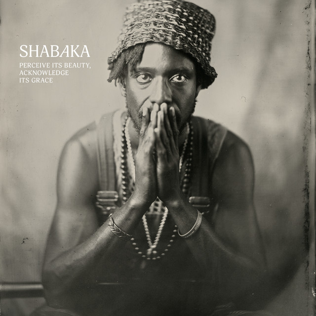

Shabaka - Perceive Its Beauty Acknowledge Its Grace



Información del álbum facilitada por discogs.com:
Fecha de lanzamiento: 2024
Géneros: Jazz
Estilos:
Pais: Netherlands
Sello: 3024
Phonographic Copyright (p): 3024
Copyright (c): 3024
Manufactured By: S.T. Holdings Ltd.
Distributed By: S.T. Holdings Ltd.
Mastered At: Metropolis Mastering
Artwork - Erosie (2)
Mastered By - Stuart Hawkes
Written-By, Producer, Mixed By - Redshape
Tracklist:
A1. End Of Innocence (feat. Shabaka Hutchings & Nasheet Waits & Carlos Niño & Jason Moran) 2:36
A2. As The Planets And The Stars Collapse (feat. Brandee Younger & Charles Overton (3) & Shabaka Hutchings & Miguel Atwood-Ferguson) 2:35
A3. Insecurities (feat. Charles Overton (3) & Shabaka Hutchings & Moses Sumney) 4:39
A4. Managing My Breath, What Fear Had Become (feat. Shabaka Hutchings & Charles Overton (3) & Saul Williams) 3:11
A5. The Wounded Need To Be Replenished (feat. Carlos Niño & Nduduzo Makhathini & Shabaka Hutchings & Surya Botofasina) 2:44
A6. Body To Inhabit (feat. Esperanza Spalding & Christopher Sholar & Shabaka Hutchings & Brandee Younger & Charles Overton (3) & Elucid) 7:28
B7. I’ll Do Whatever You Want (feat. Esperanza Spalding & Tom Herbert & Marcus Gilmore & Floating Points & Andre 3000 & Dave Okumu & Carlos Niño & Shabaka Hutchings & Laraaji) 7:43
B8. Living (feat. Shabaka Hutchings & Brandee Younger & Charles Overton (3) & Miguel Atwood-Ferguson & Eska Mtungwazi) 3:41
B9. Breathing (feat. Shabaka Hutchings & Rajna Swaminathan) 4:27
B10. Kiss Me Before I Forget (feat. Shabaka Hutchings & Nasheet Waits & Carlos Niño & Jason Moran & Lianne La Havas) 2:57
B11. Song Of The Motherland (feat. Shabaka Hutchings & Charles Overton (3) & Anum Iyapo) 4:45